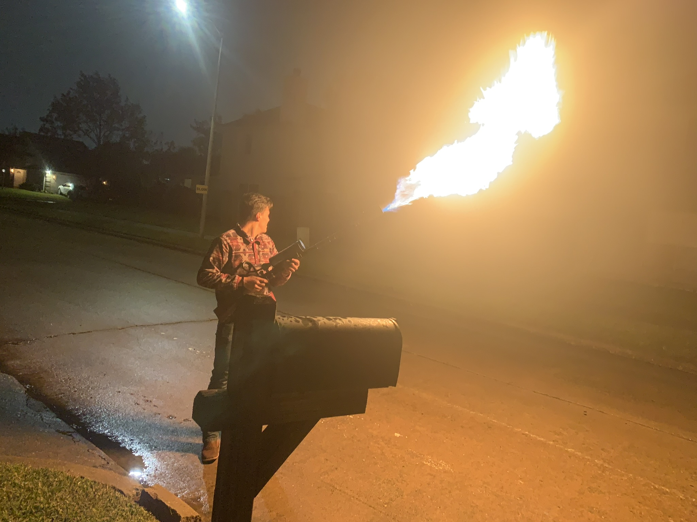

Outdoor test of the completed project.
Click any thumbnail to view it larger.
Project Overview
A distinctive fabrication and integration project.
I built this project as my own interpretation of the Boring Company Not-a-Flamethrower. The build combined a torch-style burner assembly with a surplus Mosin-Nagant wooden stock to create a more finished, integrated physical package.
Compared with my earlier liquid-fuel experiments, this project was visually simpler but more focused on the finished mechanical layout and how existing components could be mounted into a cohesive form.
What I worked on
- Adapted existing mechanical components into a custom physical layout.
- Integrated the burner assembly with the wooden stock.
- Refined the mounting and overall packaging into a finished build.
- Tested and documented the completed prototype.
Testing